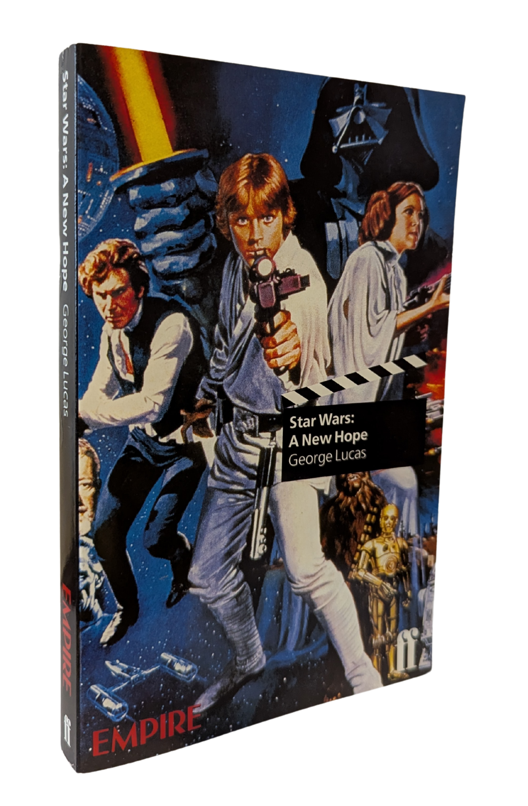
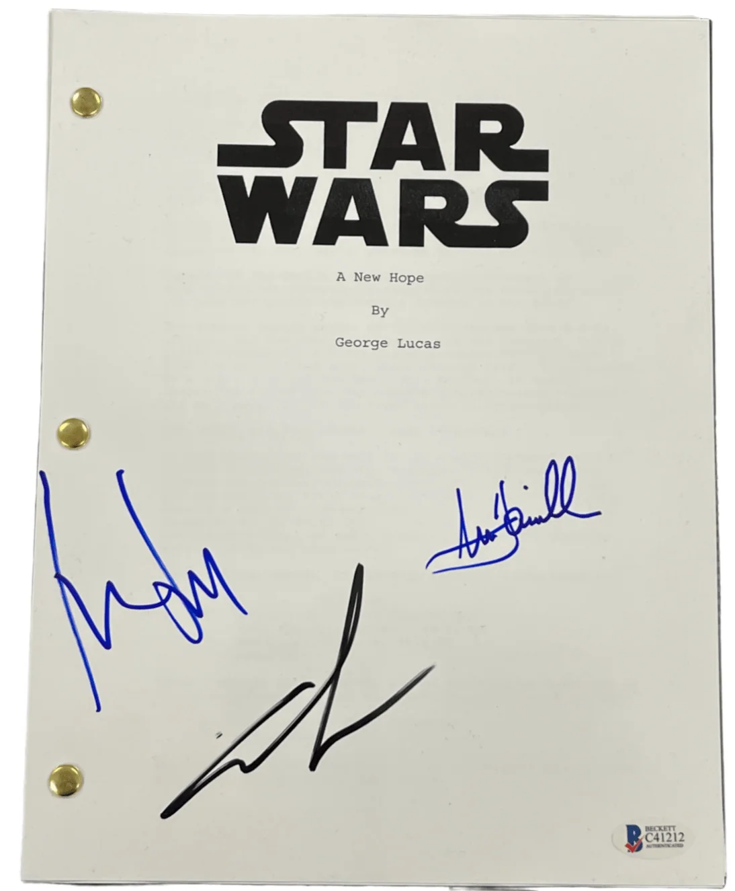
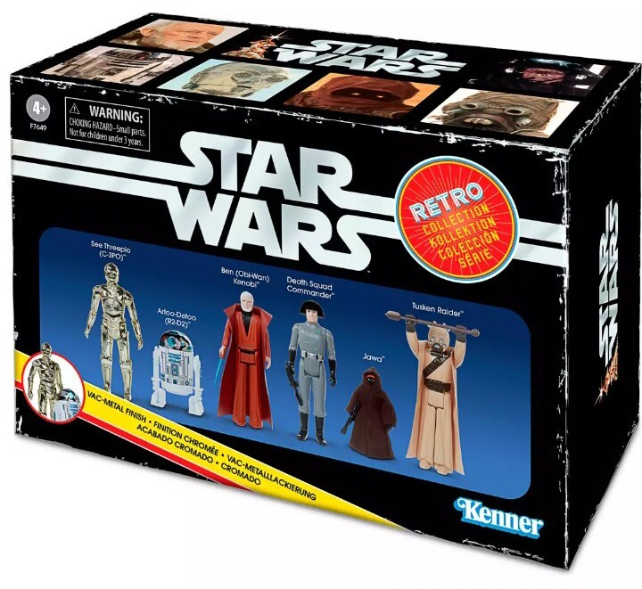
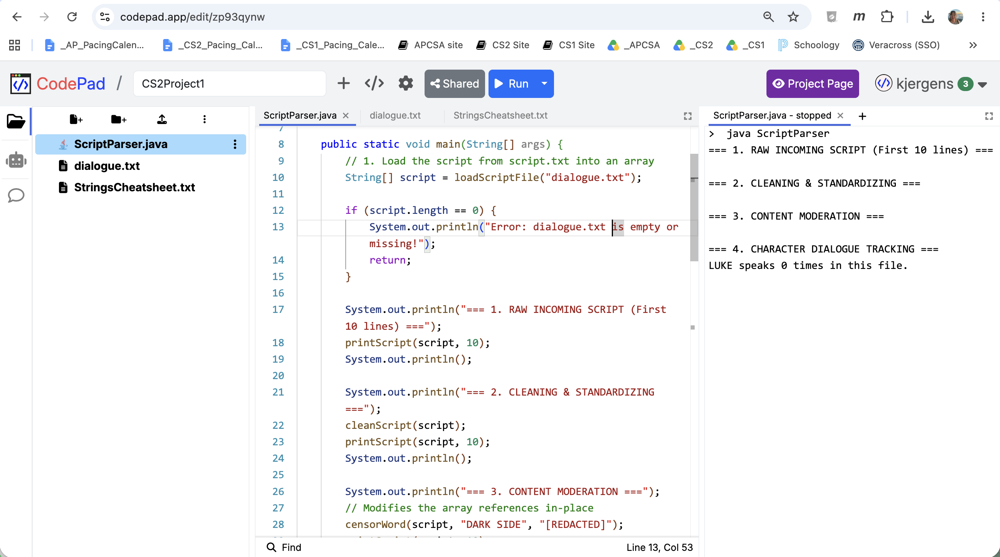

Project 1: Script Parser (Star Wars edition)
Project Overview
How many times does Luke Skywalker speak in the first Star Wars movie? How about C3P0? Princess Leia? For this project, you will create a text analysis program, use it on the script of Star Wars (1977) and answer questions like these.



Summary: You will store lines of a movie script inside a String[] array and pass that array through different methods. Because arrays in Java are passed by reference, any changes you make to the array inside a method will permanently change the original array in your main method.
Setup
Part A: Your Codepad
- Create a CodePad.app account with your school Google Account.
- Go to MyPads -> +New Pad
- Select Java -> Create
- Name the project
CS2Project1-YOURNAME. - Select the three dots and Rename
Main.javatoScriptParser.java - Add file and rename it dialogue.txt.
- Add a file and rename it StringsCheatSheet.txt.
Part B: Copy the files
- Paste the Starter Code
- Copy and paste the text file dialogue.txt.
- Copy and paste the StringsCheatSheet.txt.
- Run the program.
Your setup is correct if you see the following:

Complete the Project
Follow the comments in the code to complete the project. You will complete the methods for:
- printScript
- cleanScript
- censorWord
- countCharacterLines
Reflection
Submit your code with the answers to these questions:
- How would you show the first 25 lines of the script instead of the first 10?
- How would you censor "kill" to "hurt"?
- How would you count how many times HAN spoke?